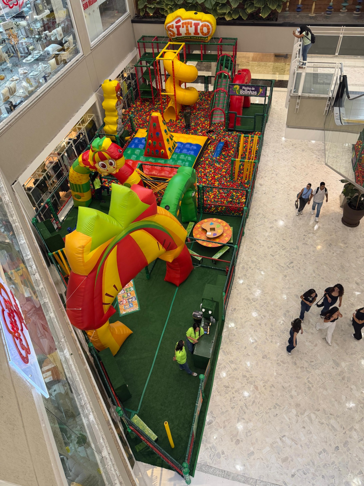
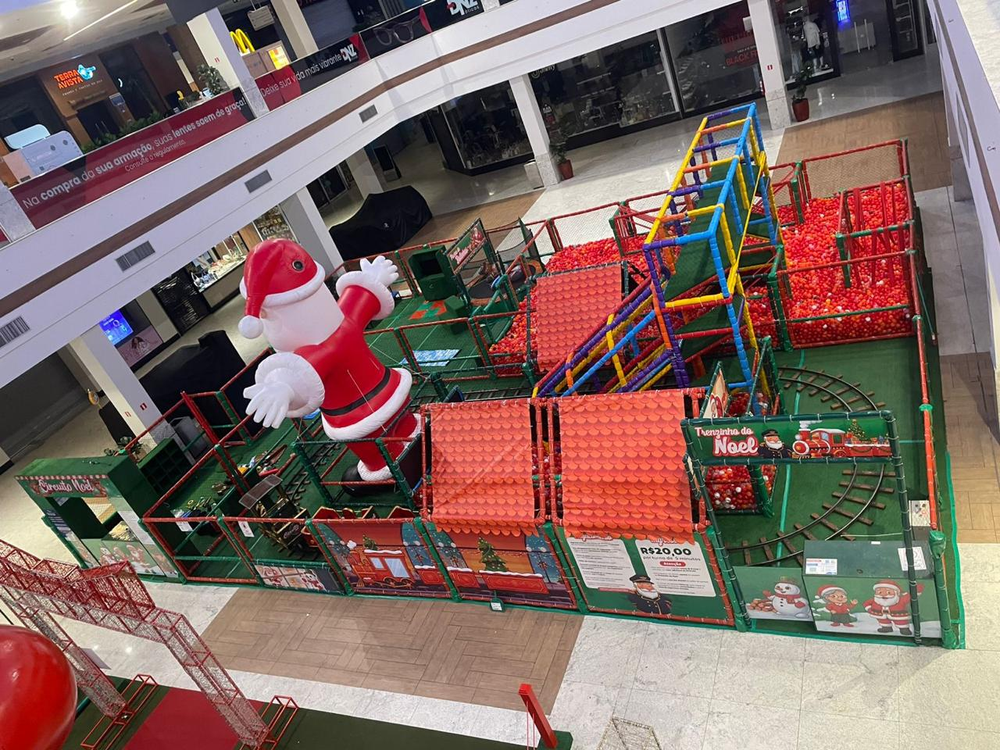
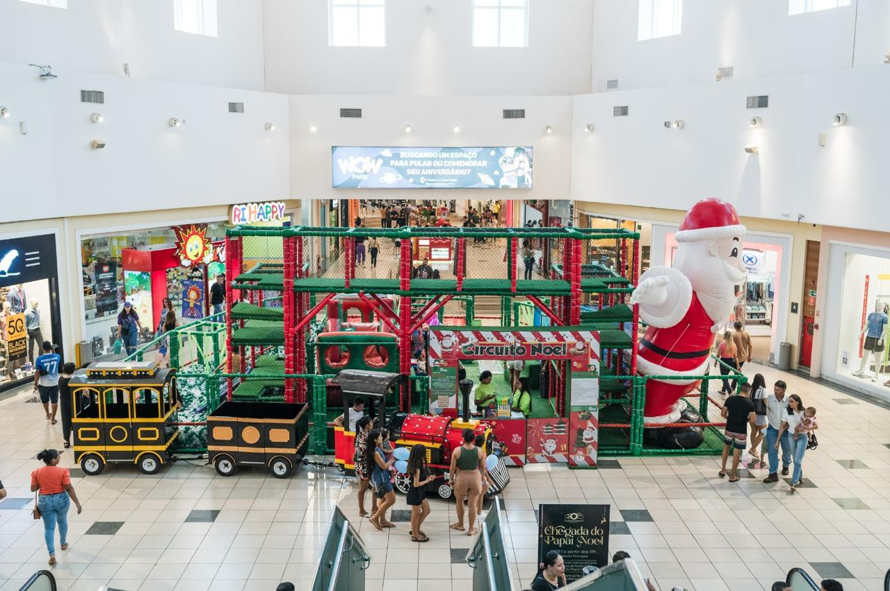
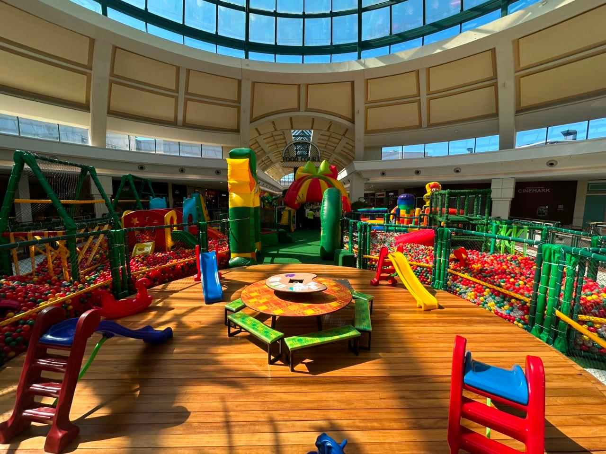
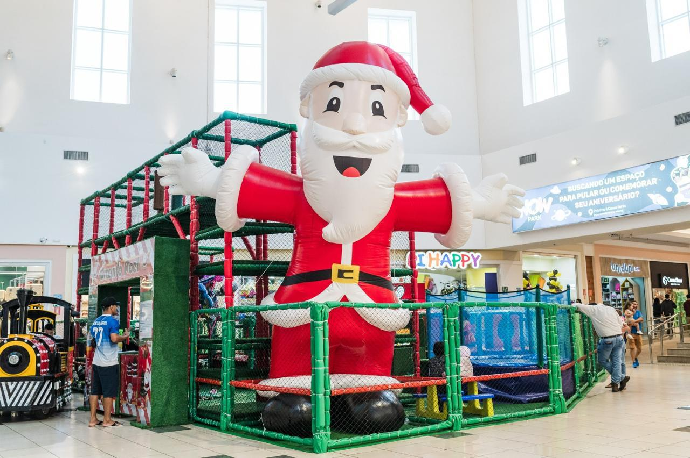
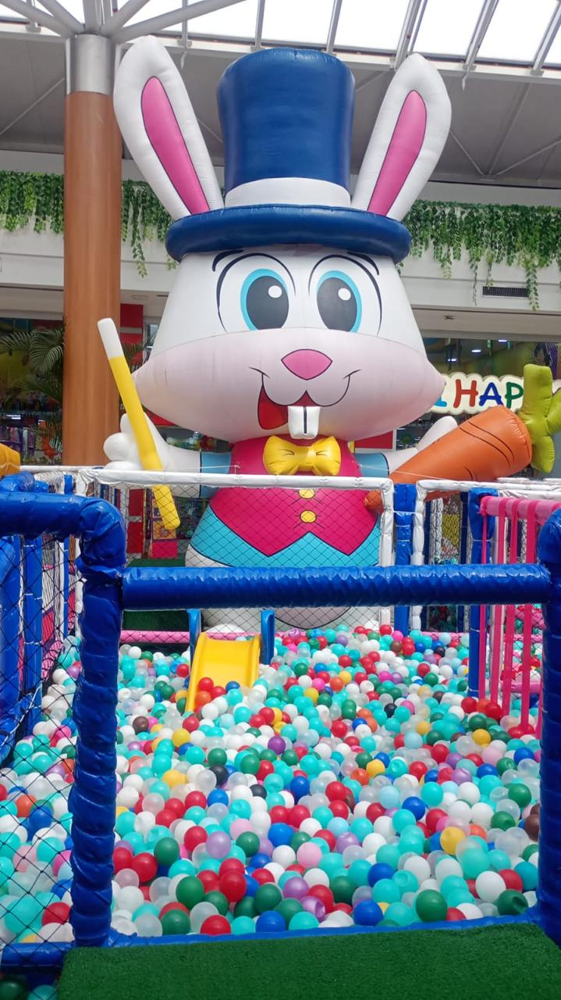

A EMPRESA • SAFÁRI DIVERSÃO
Transformando espaços
2017início da trajetória
+90operações divulgadas pela marca
+3.000crianças por dia, segundo dados institucionais
Transformando espaços
em experiências que ficam na memória.
Desde 2017, a Safári Diversão desenvolve e opera experiências de entretenimento infantil para shopping centers, combinando criação, produção, implantação, equipe e gestão.



Nossa históriaUma empresa criada para
Uma empresa criada para
levar diversão onde as famílias estão.
A Safári nasceu com foco em entretenimento infantil e foi ampliando sua atuação em shopping centers por meio de parques, circuitos, eventos itinerantes, projetos temáticos e operações completas.
Ao longo dessa trajetória, a empresa passou a reunir diferentes competências sob a mesma operação: criação de conceitos, produção de estruturas, logística, implantação, atendimento ao público, manutenção e relacionamento com os empreendimentos.
2017
O começo
Início da atuação da Safári Diversão no mercado de entretenimento infantil.
CRESCIMENTO
Expansão dos formatos
Eventos itinerantes, parques temáticos, circuitos e projetos especiais passam a compor um portfólio cada vez mais amplo.
HOJE
Operação de ponta a ponta
A Safári trabalha a experiência completa, da leitura do espaço até a operação diária dentro do shopping.
UMA HISTÓRIA QUE CONTINUA
A Safári se prepara para celebrar
A Safári se prepara para celebrar
10 anos criando momentos inesquecíveis.
Uma trajetória construída dentro de shopping centers, ao lado de famílias, equipes e parceiros. O selo de 10 anos marca esse novo capítulo sem mudar o que sempre esteve no centro da Safári: criar experiências vivas, seguras e memoráveis.
🎪 Experiências🤝 Parcerias✨ Novos capítulos
Experiências diferentes, mesma operaçãoTemas, formatos e escalas
Temas, formatos e escalas
que mudam de projeto para projeto.
O portfólio da Safári reúne propostas sazonais, autorais e licenciadas. Cada implantação é adaptada ao espaço, ao calendário e ao perfil do empreendimento.




O que sustenta a SafáriUma marca infantil por fora.
Uma marca infantil por fora.
Uma operação estruturada por dentro.
Criação
Conceito, tema, layout, identidade visual e experiência do visitante.
Produção
Estruturas, cenografia, acabamento, testes e preparação técnica.
Implantação
Logística, montagem, organização do espaço e preparação da operação.
Operação
Equipe, atendimento, segurança, manutenção e acompanhamento diário.
PropósitoDiversão com
Diversão com
segurança, qualidade e cuidado.
A missão da Safári é criar momentos de alegria para famílias de forma agradável e segura. A empresa busca ser referência em entretenimento e ampliar sua presença nos principais shopping centers, mantendo inovação, qualidade, ética, responsabilidade e boas relações com clientes, equipes e parceiros.
Safári DiversãoUma empresa feita para
Uma empresa feita para
transformar espaço em experiência.
Conheça os projetos, veja nossa galeria ou fale com a equipe comercial.